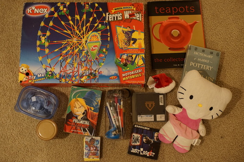
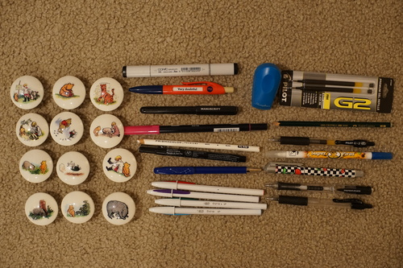

It was terrible and I have no idea why it's considered a classic.
The voice acting is actual children so you guessed it, it's even worse than normal american voice acting. The plot is uninteresting and just a complaint on consumerism. Snoopy was cute.
I was very suprised to see skunkpaste wrote a small monolog for it!
Next I watched "It's Christmastime Again, Charlie Brown". It was a little better, but I can't recommend it.
Then, I watched "Snoopy's Reunion". Skip it.
"It's Flashbeagle, Charlie Brown" came next. This one is the only one I can recommend!! Perhaps only because there are so many Snoopy dance animations. They are very fun to watch.

Today is Kikipop and Verona's birthday! Verona is 13 (older than some neocities users) and Kikipop is 7! I'm very happy to have these cuties!
Volks enthusiasts may know that SD Ariel and a DD Rin/Len rerelease was announced at Dolpa. Rin has been on my wishlist due to being either 1st or 2nd most beautiful DD sculpt in my eyes, but I'm not sure I actually want her now that I have a chance. I'm not even sure I want another DD. Strange feeling and I guess I have something to think about.
Ryan's... but I want to play with it!
Gifts for my mom
Came with a free spider but I left him at the store
fullart Olivia was in there wow!
As you all know, I'm the biggest K-Pop fan alive. I'm a little in shock that I found an album with 2 songs I know (Blue and Fantastic Baby). Can I find SHINee next?
I hope I never have to listen to any song on this single.
A gift for my coworker (or her daughter)
A photo of the Classic Pooh knobs and... the contents of the water bottle!
It's what I bought the whole danged thing for.
I was wanting to buy a (lighter pink) one, so this was perfect! Except the brush nib is frayed and the ink on that side is almost out. Can I do surgery on a pen?
what to heck is this
Someone stuck a (dried) full sized cartridge in it and I had to destroy it to get it out. I've been rinsing and soaking the dry ink out of this pen for days.
I used 5 of the knobs to replace the broken ones on my sewing desk, many pens have already been donated to the cause, and I just tossed the water bottle. You can't even sell this junk at a thrift store. I specifically bought it for the copic, but I'm excited to play with the refillable rollerball pen!